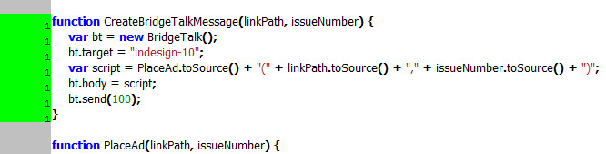

BridgeTalk
How to send two or more parameters in BridgeTalk

Examples
Get color profile from Photoshop
#target indesign
#targetengine "session"
if (!BridgeTalk.isRunning("photoshop")) {
alert("Photoshop is not running.");
}
else {
var link = app.selection[0].graphics[0].itemLink;
CreateBridgeTalkMessage(link.filePath);
}
function CreateBridgeTalkMessage(filePath) {
var bt = new BridgeTalk();
bt.target = "photoshop";
var script = GetProfile.toString() + "\r";
script += "GetProfile(\"" + filePath + "\");";
bt.body = script;
// $.writeln(script);
bt.onResult = function(resObj) {
var result = resObj.body;
DisplayProfile(result);
}
bt.send(100);
}
function GetProfile(filePath) {
try {
app.displayDialogs = DialogModes.NO;
var psDoc = app.open(new File(filePath));
var prof = app.activeDocument.colorProfileName;
psDoc.close(SaveOptions.DONOTSAVECHANGES);
app.displayDialogs = DialogModes.ALL;
return prof;
}
catch(err) {
psDoc.close(SaveOptions.DONOTSAVECHANGES);
app.displayDialogs = DialogModes.ALL;
}
}
function DisplayProfile(result) {
alert( "Color profile is \"" + ((result == "undefined") ? "Not embedded" : result) + "\"");
}
Get color settings from Photoshop
#target indesign
#targetengine "session"
if (!BridgeTalk.isRunning("photoshop")) {
alert("Photoshop is not running.");
}
else {
InfoFromPS();
}
function InfoFromPS() {
var bt = new BridgeTalk;
bt.target = "photoshop";
bt.body = "app.colorSettings;"
bt.onResult = function(resObj) {
var result = resObj.body;
DisplayProfile(result);
}
bt.send();
}
function DisplayProfile(result) {
alert( "Color Settings in Photoshop are set to \"" + result + "\"");
}
Example of passing a regular expression via BridgeTalk
#target indesign
var file = new File('~/Desktop/Sample.pdf');
if (!file.exists) { exit(); }
CreateBridgeTalkMessage({
file: file,
cropPage: 'CropToType.MEDIABOX',
resolution: 300,
usePageNumber: true,
regExp: encodeURI(/\.pdf$/.source)
});
function CreateBridgeTalkMessage(obj) {
var bt = new BridgeTalk();
bt.target = "photoshop";
bt.body = ResaveInPS.toSource()+"("+obj.toSource()+");";
bt.onError = function(errObj) {
$.writeln("Error: " + errObj.body);
};
bt.send(100);
}
function ResaveInPS(serializedObject) {
var
obj = eval(serializedObject),
regExp = new RegExp(decodeURI(obj.regExp)),
pdfOpenOptions, doc;
if (obj.file.name.match(regExp)) {
$.writeln( "This is PDF" );
pdfOpenOptions = new PDFOpenOptions();
pdfOpenOptions.cropPage = eval(obj.cropPage);
pdfOpenOptions.resolution = obj.resolution;
pdfOpenOptions.usePageNumber = obj.usePageNumber;
}
else {
$.writeln( "This is not PDF" );
}
app.displayDialogs = DialogModes.NO;
doc = app.open(obj.file, pdfOpenOptions);
app.displayDialogs = DialogModes.ALL;
}
Open image in Photoshop right after placing -- an interesting example of using BridgeTalk (to communicate InDesign with Photoshop) in combination with afterImport event listener (to trigger the script every time an image is placed). Click here to download the script.
Writing info to link´s metadata in InDesign
How to get result and error from BridgeTalk message
#target indesign
CreateBridgeTalkMessage("~/Desktop/test.png");
function CreateBridgeTalkMessage(myImagePath) {
var bt = new BridgeTalk();
bt.target = "photoshop";
var myScript = "OpenInPS = " + OpenInPS.toSource() + "\r";
myScript += "OpenInPS(\"" + myImagePath + "\");";
bt.body = myScript;
bt.onResult = function(resObj) {
alert("Done! - " + resObj.body);
}
bt.onError = function(msg) {
alert("Error: " + msg.body);
}
bt.send(100);
}
function OpenInPS(myImagePath) {
app.displayDialogs = DialogModes.NO;
var myPsDoc = app.open(new File(myImagePath));
app.displayDialogs = DialogModes.ALL;
return myPsDoc.name;
}
BridgeTalk diagnostics
var results = BridgeTalk.__diagnostics__;
var resultDoc = app.documents.add();
resultDoc.textFrames.add
(
{
geometricBounds : [ 0,0,"250mm","200mm"] ,
contents : results
}
);
Test if BridgeTalk is Running
var targetApp = "photoshop";
alert( "Test from " +
app.name +
" version " +
app.version +
" BridgeTalk.isRunning in " +
targetApp + " = " +
BridgeTalk.isRunning(targetApp) );